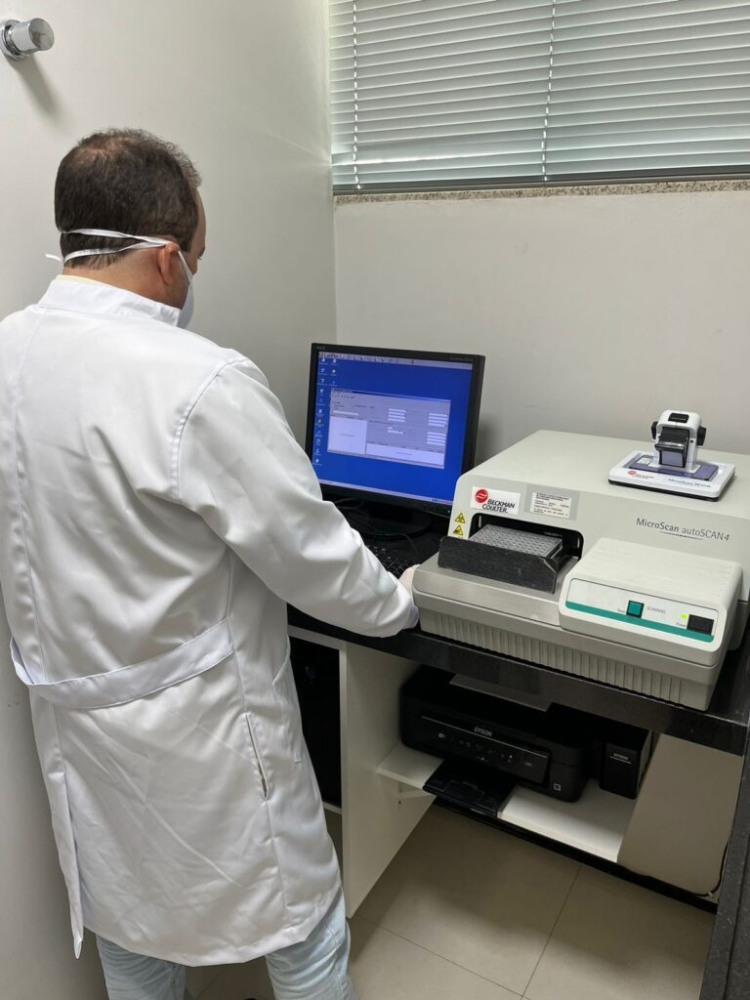

MicroScan autoSCAN 4
Equipamento automático do setor de Microbiologia, utilizado para realização de exames de Urocultura, liberando resultados com maior precisão e exatidão. Tendo em vista, brevemente, a realização também de Cultura de Secreção e Orofaringe, aumentando seu portfólio de exames na Microbiologia.